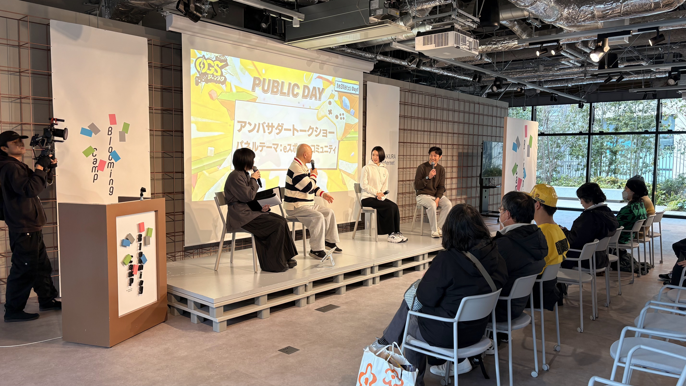

For companies, schools, and local governments
Talks and seminars
We plan programs and provide speakers for in-house esports study sessions, industry seminars at schools, PR events and talks on entrepreneurship, tailored to your goals.
COMMUNITY FIRST. OSAKA.
For players, communities, schools, and businesses.
With gaming communities at the center,
we grow esports in Osaka together.

REGISTER
Free registration is open to players, teams, referees, coaches, commentators, streamers, production and streaming staff, including freelancers, and companies and organizations. Anyone aged 13 or older can join the official Discord community.
NEWS
 News
News
 Event report
Event report
OUR PURPOSE
Gamers first.
Game community first.
Japan esports Union Osaka values both those who enjoy playing games and those who support its culture. We connect with local governments, schools, and companies, expanding the opportunities for challenge through lectures and event cooperation, matching, and student support.
About the UnionWHAT WE DO
Get in touch to discuss talks, event support, student programs and more.
For companies, schools, and local governments
We plan programs and provide speakers for in-house esports study sessions, industry seminars at schools, PR events and talks on entrepreneurship, tailored to your goals.

For event organizers
We support the construction of the venue by providing consultations on equipment needed for workshops and competitions, confirming game IP permissions, and introducing event companies, etc.

For companies and schools
We provide consultations for esports services and products, business matching, and support for job search activities between students and companies.

For local governments
We participate in the Osaka eSports Growth Guild established by the Osaka Prefecture and cooperate with the development and promotion of the Osaka Prefecture's esports industry.

For local governments and organizers
We work to attract domestic and international esports events to Osaka Prefecture, including events linked to the National Sports Festival and Nenrinpic, and events run by game IP holders.

For members and students
We support learning for members and students through newsletters, study sessions and networking events. The JeSU Osaka Esports Academy is in development.
EVENTS
The program was scheduled to include a conversation with 籔田 寛 of Joshin Corporation’s Solution Business Promotion Department about the company’s esports initiatives, followed by networking.
Dates and status follow the official Japanese calendar. Newly updated details may appear in Japanese.
OSAKA EVENT CALENDAR
A major stage for games and esports where you can meet in Osaka.
We share officially announced information on major events involving JeSU, game publishers, professional teams and streamers, and on events submitted through our form.
External events are run by the listed organizers. Check their official sites for the latest dates and eligibility.
| Sun | Mon | Tue | Wed | Thu | Fri | Sat |
|---|---|---|---|---|---|---|
| 1 | 2 | 3 | 4 | 5 | 6Play-in | 7Play-in |
| 8Swiss qualifying | 9Swiss qualifying | 10Swiss qualifying | 11Swiss qualifying | 12 | 13Final DAY 1 | 14Final DAY 2 |
| 15Final DAY 3 | 16 | 17 | 18 | 19 | 20 | 21 |
| 22Company-organized | 23Company-organizedCompany-organized | 24 | 25 | 26 | 27 | 28Company-organized |
| 29Company-organized | 30 |
● Scheduled event × Cancelled. Select a date marker for details.
Japanese calendar last checked: 2026.11.23
JeSU-related events (including today): 0
November 6 (Fri), November 7 (Sat)Start time not announced
4 of 8 teams have made it to the Swiss Stage.
November 8 (Sun), November 9 (Mon), November 10 (Tue), November 11 (Wed)Start time not announced
The top 8 of 16 teams advanced to the final stage.
November 13 (Fri)09:15–21:50
Day 1 of the playoffs: quarterfinals. Doors open at 08:30, play starts at 09:15, and the scheduled finish is 21:50.
November 14 (Sat)10:00–17:30
Day 2 of the playoff. Semi-finals were held. General opening 09:15 / Performance start 10:00 / Scheduled end of performance 17:30.
November 15 (Sun)10:00–18:30
The final day of the tournament. The winner is decided in the Grand Final. General opening 09:15 / Performance start 10:00 / Scheduled end of performance 18:30.
November 23 (Mon)14:00
Individual races, team races, and experience races of Gran Turismo 7 were scheduled. Eight participants in individual matches, 8 participants in team matches, and a maximum of 12 participants in experience races.
November 22 (Sun), November 23 (Mon)11:00–19:00
The third-floor gaming area was scheduled from 11:00 to 19:00 on both days. Admission and participation were free. The announced program included tournaments and hands-on activities. See the organizer’s announcement for games, guests, and program details.
November 28 (Sat)13:00
This Street Fighter 6 tournament requires advance registration. It is for high school, university, and other eligible students living in Kansai, including vocational school students. The individual tournament opens at 13:00, with on-site check-in from 12:00. Team qualifiers are scheduled for 14:45. Each team must have three players.
November 29 (Sun)11:00–18:50
The Fall Guys finals are 11:00 – 13:00, and GT7 finals are 13:30 – 18:50 (scheduled). Participants who have passed each preliminary stage will gather.
December 5 (Sat)13:00–22:00
An event combining bring-your-own-PC (BYOC) gaming and music. The third-floor gaming area closes at 20:00.
December 12 (Sat), December 13 (Sun)10:30
A large fan meetup for T1’s League of Legends team. Hall 5: 13:00–18:00 (doors open at 12:00). Hall 4: 10:30–19:00 on December 12 and 10:30–18:00 on December 13. Check the official announcement for ticket and registration availability.
December 26 (Sat)10:00–19:00
A manufacturer's official fan event scheduled to include events such as the Prospi A League championship final.
December 26 (Sat)13:00–19:00
An exchange event where you bring your PC, game console, and analog games. Held simultaneously with the "End-of-Year Game Exchange Meeting."
December 27 (Sun)10:00–19:00
An exchange event where you bring your PC, game console, and analog games. Held simultaneously with the "End-of-Year Game Exchange Meeting."
January 16, 2027 (Sat)10:00
The Kinki regional tournament has two divisions: KING OF DRIVER and TOUGE BATTLE ROYALE. KING OF DRIVER entries run from November 26 to December 23, 2026, closing at 23:59 JST. Check the official announcement for details, including on-site registration for TOUGE BATTLE ROYALE.
March 13, 2027 (Sat)11:00–17:00
An exhibition and trial event for indie games. You can play the game and interact with the creators.
No matching JeSU-related events are scheduled. For other events in Osaka Prefecture, see “Upcoming events (all months).”
We accept requests to publish esports-related events via a dedicated form.
OUR CONNECTIONS
We are working on promoting esports in Osaka through lectures, equipment cooperation, and matching.
Through participating in the Osaka eSports Growth Guild (OeGG), we are cooperating with the development and promotion of the local esports industry.
About OeGG ↗We provide support tailored to the needs on the ground, such as internal study sessions, industry seminars at schools, equipment cooperation for workshops and competitions.
Discuss a partnership ↗We help members and students learn and connect through newsletters, study sessions and networking events. The JeSU Osaka Esports Academy is in development.
Membership information (PDF, Japanese) ↗ABOUT US
We are an Osaka esports organization that connects people who love games with communities, companies, and schools.
BOARD MEMBERS

Representative Director
Energizing Japan from Osaka!

Director
We will spread the fun of games and the passion for esports to the world from Osaka!

Director
Respect the accumulated gaming community culture and strive for harmony with esports.

Auditor
I believe in the potential of esports.
CONTACT
Contact us about speaking, official endorsement, event cooperation, membership, or collaboration.